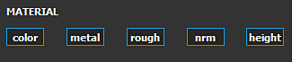
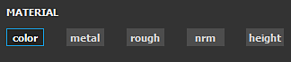

If all channels are enabled, the eraser will remove information inside all the channels:
The Eraser is a paint tool that erase/hide what has been painted previously by other tools. This tool only affect one layer at a time.
The Eraser share common parameters and behaviors with the Paint tool. To know more about the brush, alpha and stencil controls take a look at the Paint tool page.
Technically, the eraser doesn't really remove information. It simply set the layer alpha back to zero which erase/hide the previous painting information. This means :
This is why sometimes it is more advised to delete a layer and recreate it rather than using the eraser as it can improve performances.
When erasing information, it possible to only affect specific channels.
Contrary to the Paint tool, the Eraser only allows to define which Channels will be affected. It is not possible to load a resource from the Shelf to affect each channel.
If all channels are enabled, the eraser will remove information inside all the channels:

If specific channels are selected, the eraser will remove information from those channels only:
